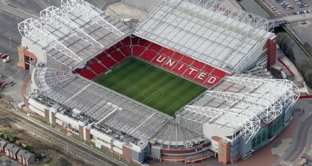
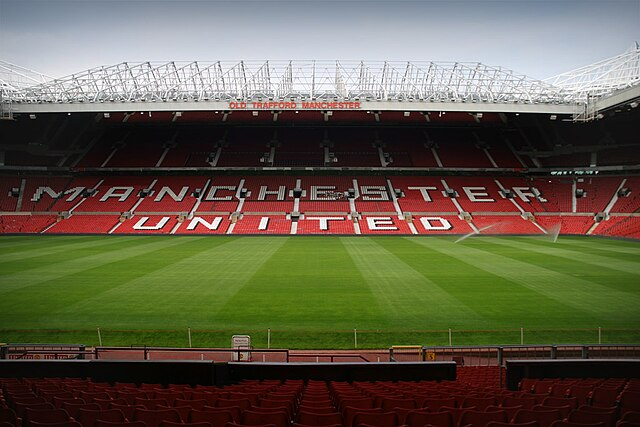
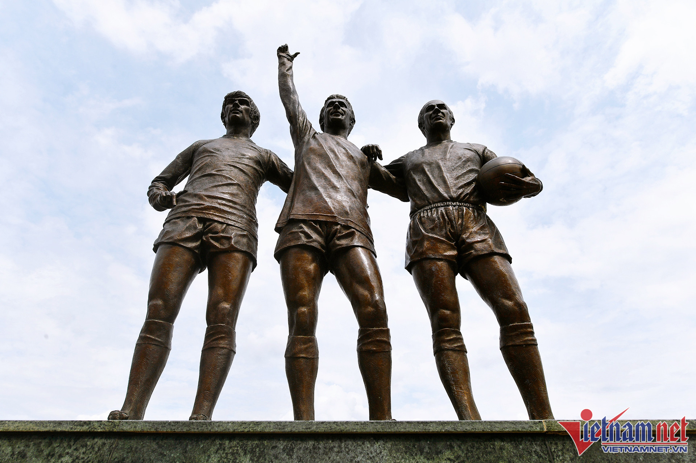
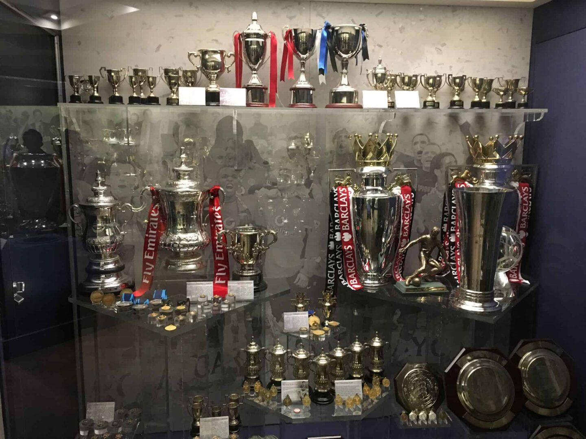

Khám phá hành trình phát triển của sân vận động Old Trafford!
Tên đầy đủ: OLD TRAFFORD FOOTBALL GROUND
Xây dựng: 1910
Chiều dài sân: 105m x 68m
Sức chứa: 76.000 chỗ ngồi
Old Trafford là sân vận động bóng đá nằm ở Old Trafford, Greater Manchester, Anh. Nơi đây là sân nhà của Manchester United từ năm 1910. Với sức chứa vào khoảng 76.000 chỗ ngồi, đây là sân vận động dành cho câu lạc bộ lớn nhất ở Vương quốc Anh, và lớn thứ 11 ở Châu Âu. Nó cách sân vận động Old Trafford Cricket Ground và trạm dừng xe điện gần đó khoảng 800 m.
SVĐ Old Trafford còn được biết đến với biệt danh là “Nhà hát của những giấc mơ”. Tên gọi này bắt nguồn từ một trong những biểu tượng của Manchester United là Sir Bobby Charlton. Cầu thủ huyền thoại của United đã từng nỏi: “Đây là câu lạc bộ bóng đá Manchester United, đây là nhà hát của những giấc mơ”. Câu nói này đã được xuất bản trong cuốn sách năm 1987 của John Riley với tựa đề ‘Soccer’.
Sir Matt Busby được coi là một trong những HLV xuất sắc nhất trong lịch sử của Manchester United. HLV người Scotland đã dẫn dắt Manchester United từ năm 1945 đến năm 1969 và đưa câu lạc bộ tiến tới chiếc cúp vô địch châu Âu đầu tiên của mình. Một bức tượng của Matt Busby đã được dựng lên bên ngoài Old Trafford để vinh danh ông vào năm 1996
United Trinity hay Holy Trinity là bộ ba bức tượng huyền thoại của Manchester United gồm George Best, Denis Law và Sir Bobby Charlton. Đây là những cầu thủ đã giúp Quỷ đỏ trở thành đội bóng Anh đầu tiên vô địch Cúp Châu Âu năm 1968.
Ở thập niên 1960, cả 3 cầu thủ trên đều từng giành được giải thưởng Quả bóng vàng George Best (1968), Denis Law (1964) và Charlton (1966). Bộ 3 này đã ghi tới 665 bàn sau 1633 trận đấu cho MU. Để ghi nhờ những đóng góp của họ, bộ 3 bức tượng United Trinity đã được dựng lên bên ngoài cửa sân Old Trafford vào năm 2008.
Vào cuối năm 2012, một bức tượng cao 9foot (2,7m) của Sir Alex Ferguson đã được dựng lên bên ngoài sân vận động. Bức tượng của vị HLV huyền thoại Manchester United được điêu khắc bởi Philip Jackson. Đây là động thái nhằm thể hiện sự biết ơn đối với những gì ông đã đóng góp cho CLB.
1966 FIFA World Cup
Rugby League World Cup
UEFA Euro 1996
2003 UEFA Champions League Final
2012 Olympic Football
2013 Rugby League World Cup
UEFA Women's Euro 2021
2021 Rugby League World Cup
